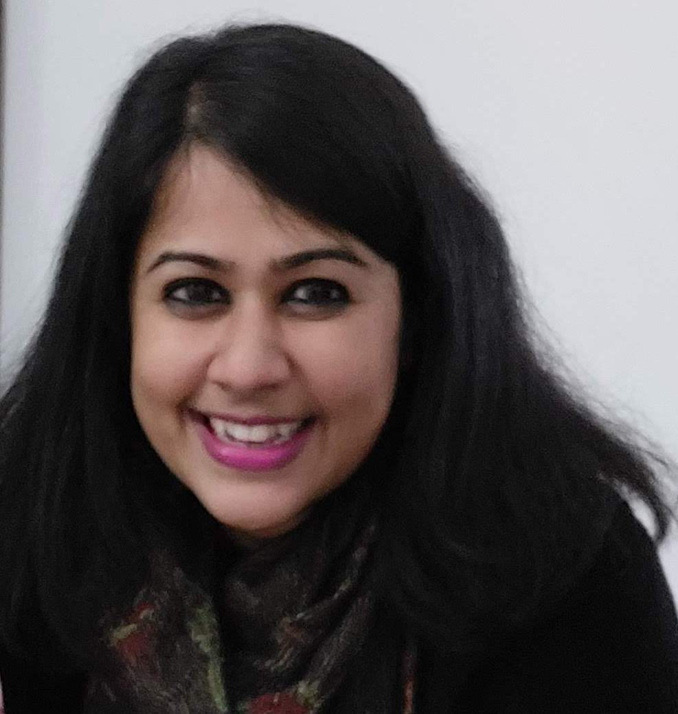

Mayurakshi Chaudhuri
Associate Professor of Sociology
FLAME University, Pune
mayurakshi.chaudhuri@flame.edu.in
About
Dr. Mayurakshi Chaudhuri is Associate Professor of Sociology in the Department of Social Sciences, FLAME School of Liberal Education at FLAME University, Pune. She is the Founding Faculty of Digital Humanities programs (M.Sc. and Ph.D) at IIT Jodhpur where she was affiliated to before joining FLAME University. Chaudhuri's research areas include Migrations and Mobilities,Gender Studies, Historical Sociology, Technology and Society, Digital Humanities, and Qualitative Research Methods. Chaudhuri is the recipient of international and national fellowships including a Indo-Swiss Grant jointly funded by the Swiss National Science Foundation (SNSF), the Ministry of Earth Sciences (MoES) and the Indian Council of Social Science Research (ICSSR), a GESIS-EUROLAB Fellowship from the Leibniz Institute for the Social Sciences (GESIS, Germany), a German Academic Exchange Service (DAAD) Fellowship, and the Government of India National Merit Scholarship. Her research has been extensively published with top tier journals such as Sex Roles (Springer), Transfers (Berghahn Books, Oxford), and Applied Mobilities (Taylor and Francis). She has completed an online teaching project for the course Gender and Society as part of the Ministry of Human Resource Development's Direct To Home initiative (DTH Channel 16: NPTEL: Humanities, Social Sciences, and Management). Her recent research projects focus on emerging areas of technology and mobility, digital healthcare, and images in digital cultures. An interdisciplinary scholar with academic training in Sociology, Cultural Anthropology, and Geography, she enjoys advising undergraduate, postgraduate, and doctoral projects that are located at the intersections of society, culture, and technology.
Education
- Ph.D. Global and Sociocultural Studies, Florida International University, USA
- M.A. Comparative Sociology, Florida International University, USA
- M.A. Regional Planning, University of Sheffield, United Kingdom
- B.Sc. Geography, University of Calcutta, India